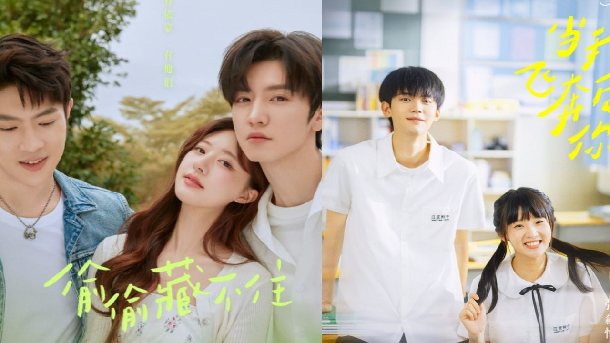

Desde hace ya un tiempo hemos podido ver como los C-dramas han ganado mayor persepción dentro de las generaciones más jóvenes, incluyendome a mi dentro de estas. Hace no mucho incluso he notado que este tipo de series ha comnzado a aperecer de manera más frecuente en los trendings y top series del momento, esto debido a la ayuda e interacción que lxs usuarixs amantes de los C-dramas hemos tenido mediante las redes sociales.
Puedo mencionar que inclusive hace no mucho yo comencé a ver C-dramas, podrÃa decir que hace unos 2 o 3 años aproximadamente. Sin embargo, desde que los vi por primera vez no los he soltado, con esto no quiero intentar desprestigiar a los K-dramas ni nada por el estilo, simplemente es cuestión de gustos y por su puesto que los K-dramas también tiene algunas joyitas como "Nos vemos en mi 19.ª vida", "True Beauty" o "Strong Woman Do Bong Soon", pero en este post me gustarÃa hablar especÃficamente de los C-dramas.
Algo que me gustarÃa mencionar sobre los C-dramas, especificamente sobre los de romace, pues son los que más veo.... es que estos cuentan con una idea un poco más realista de las relaciones se podrÃa decir de cierta manera, pues he notado que en la mayorÃa de sus tramas implementan situaciones que mayormente podemos encontrar en la cotideanidad, por otro lado, en los K-dramas se acostumbra a generar un poco más de drama dentro de sus series. Por lo tanto, si te gusta más el drama, te recomendarÃa los K-dramas, por otro lado, si prefires algo más tranquilo seguramente preferirás los C-dramas.
Ahora me gustarÃa realizar una pequeña recomendación de algunos de mis C-dramas favoritos...
Recomendaciones de C-dramas
Hidden Love


Este cdrama me atrapó desde el primer capÃtulo, tanto la historia como la quÃmica entre los protagonistas Sang Zhi y Duan Jia Xu (Zhao Lu Si y Chen Zhe Yuan), es increÃble y encantadora, podrÃa decir que es uno de los mejores Cdramas que se han estrenado este 2023, y definitivamente uno de mis favoritos, sin duda la volverÃa a ver mil veces. La calidad de actuación de SHao Lu Si y Chen Zhe Yuan asà como de cada personaje es realmente increÃble y genial.
Este cdrama tuvo todo lo que amo que me tenÃa gritando de la emción, reÃa mucho, me daban esos ataques de felicidad donde te dan ganas de patear hacia el aire, simplemente AMEEEE ESTE CDRAMA.💕💕
¿Dónde ver?: Netflix
When I Fly Towards You


Siemplemente un drama muy tiernooo ğŸ˜ğŸ˜ğŸ˜. Los personajes son tan lindos que te dan ganas de llorar de la emoción cuando hay alguna interacción entre ellosğŸ˜â˜ï¸.
Me encanta la personalidad de Su Zai Zai, es tan lindaaa pero cuando se necesita siempre protegera a Rang Rang. Amo la comunicación que hay entre los protas, sus lÃneas, sus coqueteoos, las miradas, simplemente todo es hermoso. 💕💕💕
¿Dónde ver?: Netflix
Exclusive Fairytale


Es una seria bastante entretenida, hubó muchas escenas en las que me causaba mucha risa las interacciones de nuestros protas (Ling Chao y Xiao Tu) y mucha pena por Zhang Miao Yi la actriz quién interpreta a nuestra prota (Xiao Tu)ğŸ˜â˜ï¸. Esta serie contendrá bastante comedia, pero eso no significa que no tendrá sus momentos románticos, por supuesto que lo hará y te harán querer gritar de la emoción.
DeberÃan darle una oportunidad a esta serie si es que quieren pasar un buen rato, realmente no se arrepentirán. 😂
¿Dónde ver?: Viki, ¡QIYI, Doramasflix
Falling Into Your Smile


En general me encanto el C-drama, cuenta con una historia muy bonita y tierna, muy llevadera que te entretendrá a la perfección. La quÃmica entre los protagonistas es genial y el resto del reparto también lo es, realmente cuentan con una historia bien desarrollada, además del crecimiento de los personajes.
Me encanto la trama de la serie, sobre todo la pareja principal (Tong Yao y Lu Si Cheng ) es muy tierna, me encanto la personalidad de los dos y más la de Cheng. Tuve unas cuantas desveladas devido a la serie pero la verdad no me arrepiento de nada. Realmente les recomiendo mucho mucho ver este C-drama.💕
¿Dónde ver?: Netflix
Haz click en esta imagen para una sorpresa c: